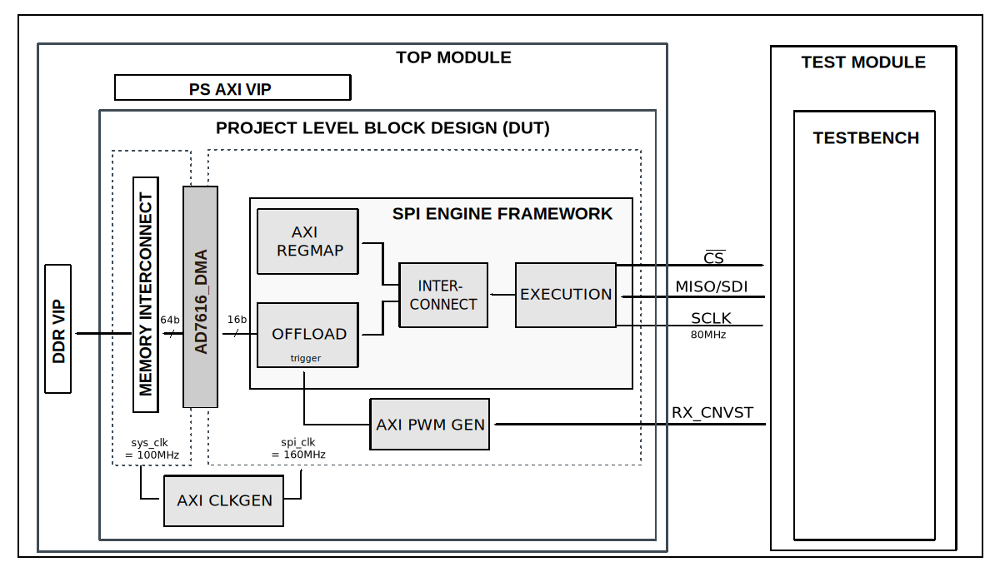

Project based test bench template#
Overview#
Block design#
Block diagram#
{kind=link}
Configuration parameters and modes#
Build parameters#
The following are the parameters of this project that can be configured:
CLK_MODE: defines clocking mode of the device’s digital interface: Options: 0 - SPI mode, 1 - Echo-clock or Master clock mode
NUM_OF_SDI: defines the number of MOSI lines of the SPI interface: Options: 1 - Interleaved mode, 2 - 1 lane per channel, 4 - 2 lanes per channel, 8 - 4 lanes per channel
CAPTURE_ZONE: defines the capture zone of the next sample. There are two capture zones: 1 - from negative edge of the BUSY line until the next CNV positive edge -20ns, 2 - from the next consecutive CNV positive edge +20ns until the second next consecutive CNV positive edge -20ns
DDR_EN: defines the type of data transfer. In echo and master clock mode the SDI lines can have Single or Double Data Rates. Options: 0 - MISO runs on SDR, 1 - MISO runs on DDR.
Configuration files#
The following are available configurations for the test bench:
Configuration mode
Parameters
CLK_MODE
NUM_OF_SDI
CAPTURE_ZONE
DDR_EN
cfg_cm0_sdi2_cz1_ddr0
0
2
1
0
cfg_cm0_sdi2_cz2_ddr0
0
2
2
0
cfg_cm0_sdi4_cz2_ddr0
0
4
2
0
cfg_cm0_sdi8_cz2_ddr0
0
8
2
0
cfg_cm1_sdi1_cz2_ddr0
1
1
2
0
cfg_cm1_sdi2_cz2_ddr0
1
2
2
0
cfg_cm1_sdi2_cz2_ddr1
1
2
2
1
cfg_cm1_sdi4_cz2_ddr0
1
4
2
0
cfg_cm1_sdi4_cz2_ddr1
1
4
2
1
cfg_cm1_sdi8_cz2_ddr0
1
8
2
0
cfg_cm1_sdi8_cz2_ddr1
1
8
2
1
Tests#
The following test program files are available:
Test program |
Usage |
|---|---|
test_program_si |
Tests the parallel interface capabilities. |
test_program_pi |
Tests the serial interface capabilities. |
Available configurations & tests combinations#
Configuration |
Test |
Build command |
|---|---|---|
cfg_si |
test_program_si |
make CFG=cfg_si TST=test_program_si |
cfg_pi |
test_program_pi |
make CFG=cfg_pi TST=test_program_pi |
Warning
Mixing a wrong pair of CFG and TST will result in a building errror. Please checkout the proposed combinations before running a custom test.
Clock scheme#
CPU/Memory interconnects addresses#
Interrupts#
Building the test bench#
The testbench is built upon ADI’s generic HDL reference design framework. ADI does not distribute compiled files of these projects so they must be built from the sources available here and here, with the specified hierarchy described Set up the Testbenches repository. To get the source you must clone the HDL repository, and then build the project as follows:.
Linux/Cygwin/WSL
Example 1
Build all the possible combinations of tests and configurations, using only the command line.
user@analog:~$
cd testbenches/ad7616
user@analog:~/testbenches/ad7616$
make
Example 2
Build all the possible combinations of tests and configurations, using the Vivado GUI. This command will launch Vivado, will run the simulation and display the waveforms.
user@analog:~$
cd testbenches/ad7616
user@analog:~/testbenches/ad7616$
make MODE=gui
Example 3
Build a particular combination of test and configuration, using the Vivado GUI. This command will launch Vivado, will run the simulation and display the waveforms.
user@analog:~$
cd testbenches/ad7616
user@analog:~/testbenches/ad7616$
make MODE=gui CFG=cfg_pi TST=test_program_pi
The built projects can be found in the runs folder, where each configuration specific
build has it’s own folder named after the configuration file’s name.
Example: if the following command was run for a single configuration in the clean folder
(no runs folder available):
make CFG=cfg_pi
Then the subfolder under runs name will be:
cfg_pi
Test stimulus#
Resources#
More information#
To be done.
Support#
Analog Devices, Inc. will provide limited online support for anyone using the reference design with ADI components via the EngineerZone FPGA reference designs forum.
It should be noted, that the older the tools’ versions and release branches are, the lower the chances to receive support from ADI engineers.